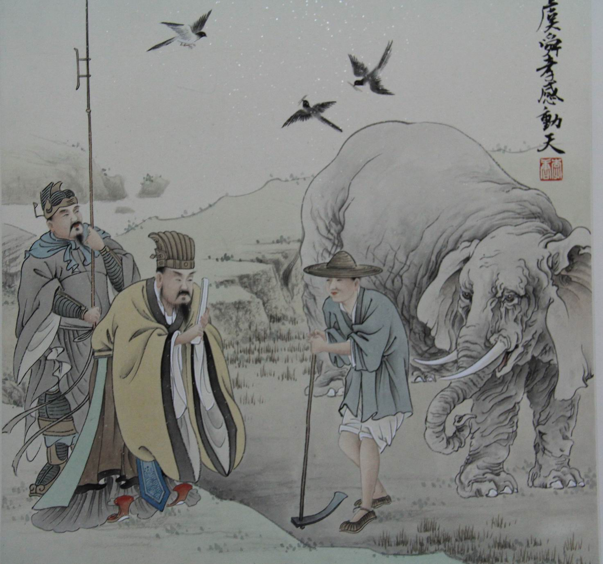

孝感动天

舜，传说中的远古帝王，五帝之一，姓姚，名重华，号有虞氏，史称虞舜。相传他的父亲瞽叟及继母、异母弟象，多次想害死他：让舜修补谷仓仓顶时，从谷仓下纵火，舜手持两个斗笠跳下逃脱；让舜掘井时，瞽叟与象却下土填井，舜掘地道逃脱。事后舜毫不嫉恨，仍对父亲恭顺，对弟弟慈爱。他的孝行感动了天帝。舜在厉山耕种，大象替他耕地，鸟代他锄草。帝尧听说舜非常孝顺，有处理政事的才干，把两个女儿娥皇和女英嫁给他；经过多年观察和考验，选定舜做他的继承人。舜登天子位后，去看望父亲，仍然恭恭敬敬，并封象为诸侯。